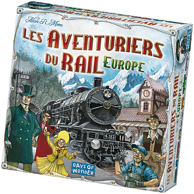

Introduction
Les Aventuriers du Rail est un jeu de plateau stratégique dans lequel les joueurs collectent des cartes de trains pour réclamer des itinéraires ferroviaires à travers différentes cartes, qui représentent différents pays du monde,ici ce sera la carte de l'Europe. Le but est de relier le plus de villes possible et de marquer le plus de points en cours de route. Le jeu est facile à apprendre, mais offre également de nombreuses possibilités stratégiques pour les joueurs chevronnés.
Images du jeu
Image n°1
Ici ce trouve le plateau de jeu, dans le contexte de notre projet il s'agissait de la carte de l'Europe.
Image n°2
Il s'agit ici des cartes à piocher pour capturer une route, la carte afficher étant orange on ne peut prendre que des routes oranges avec.

Image n°3
Le but du jeu étant de faire le plus de destination, qui rapporte plus ou moins de points ici, la destination rapporte 7 points.

Image n°4
Voici une image d'une gare, Chaque joueur débute la partie avec 3 gares en sa possession.Elles permettent de prendre une ville déjà prise par un adversaire .
Image n°5
Losrqu'un joueur capture une route, il gagne des points en fonction de la longueur de la route suivant ce tableau.